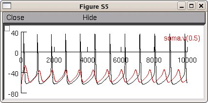

NEURON mod files from the paper: C. Savio Chan, Jaime N. Guzman, Ema Ilijic, Jeff N. Mercer, Caroline Rick, Tatiana Tkatch, Gloria E. Meredith & D. James Surmeier 'Rejuvenation' protects neurons in mouse models of Parkinson's disease, Nature 447, 1081-1086(28 June 2007) This is the model demonstrated in Supplementary Information: Figure S5: Computer simulation of the role of HCN gating in pacemaking of DA neurons. a. NEURON simulation of autonomous spiking in an SNc DA neuron. Elimination of voltage-dependent Na+ channels revealed Cav1.3 L-type Ca2+ channel dependent pacemaker potentials, similar to that found in recorded neurons. b. Elevating intracellular cAMP in the model following the model of Siegelbaum et al. 48 produced a rightward shift in the voltage of activation for HCN channels. This shift increased HCN currents in a simulated voltage clamp experiment in much the same way as seen experimentally (see Supplementary Figs. 3, 4). c. Elimination of Cav1.3 L-type Ca2+ channel silenced pacemaking activity in the model SNc DA neuron, resembling experimental observation. Elevating cAMP levels and shifting HCN voltage dependence restored pacemaking activity in the face of Cav1.3 L-type Ca2+ channel blockade. Sample model usage: Start the model with auto-launch in ModelDB or download and extract the archive and then under mswin: ------------ 1) compile the mod files with mknrndll (in the mod directory) 2) double click on the mosinit.hoc file under linux/unix: ----------------- 1) compile the mod files with nrnivmodl (in the mod directory) 2) start with "nrngui mosinit.hoc" in the rejuvenation directory Once the simulation is started: ------------------------------- 1) Click Init & Run 2) Click the box to turn off Na channels to see the Cav1.3 L-type Ca2+ channel dependent pacemaker potentials If all goes well you will create a figure similar to figure S5A in the paper:  Questions on how to use this model can be directed to Josh Held, j-held@northwestern.edu